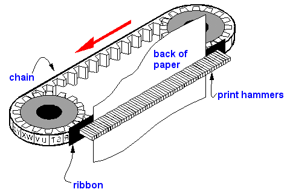
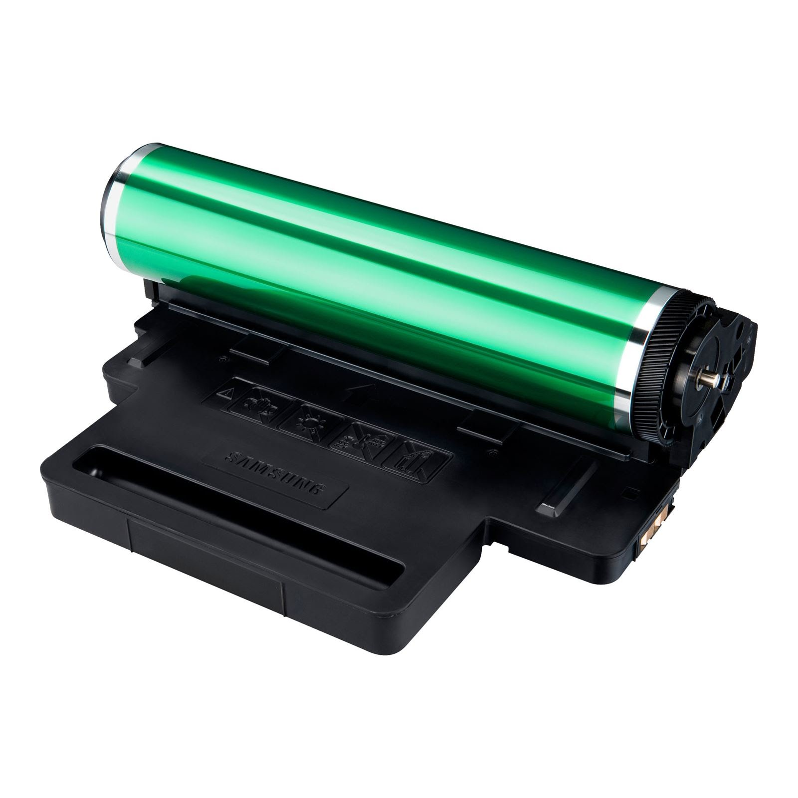
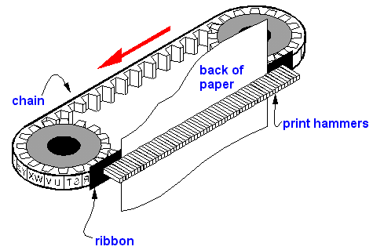
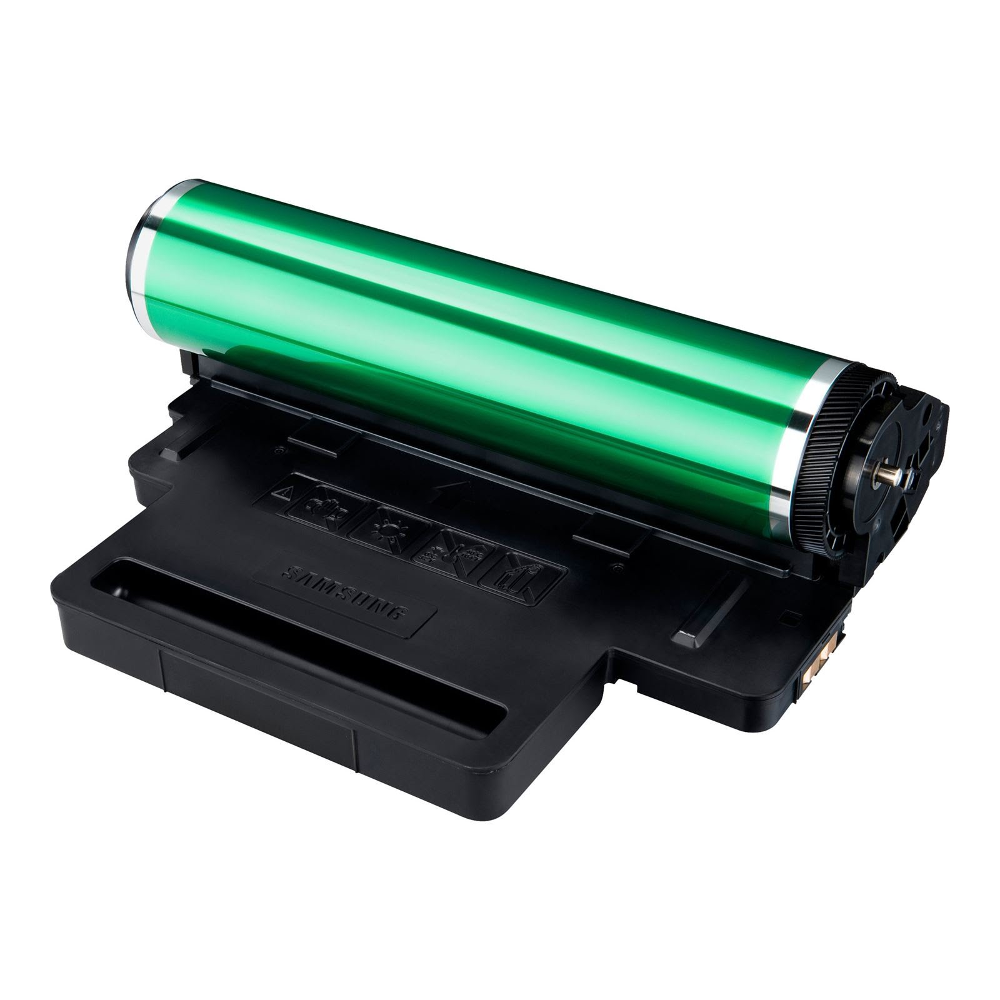
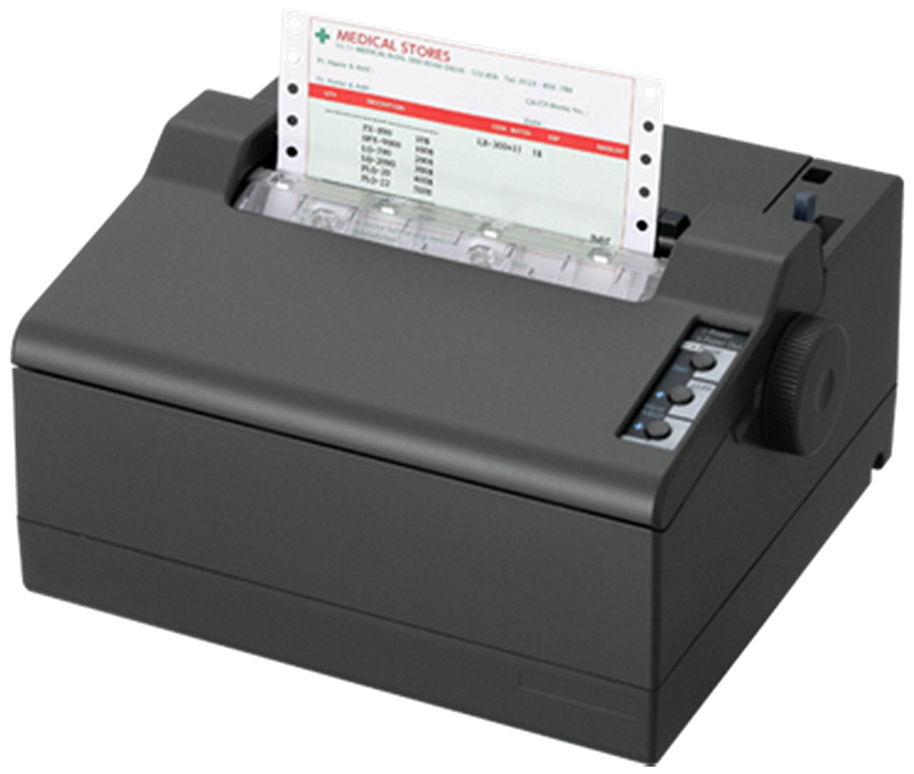
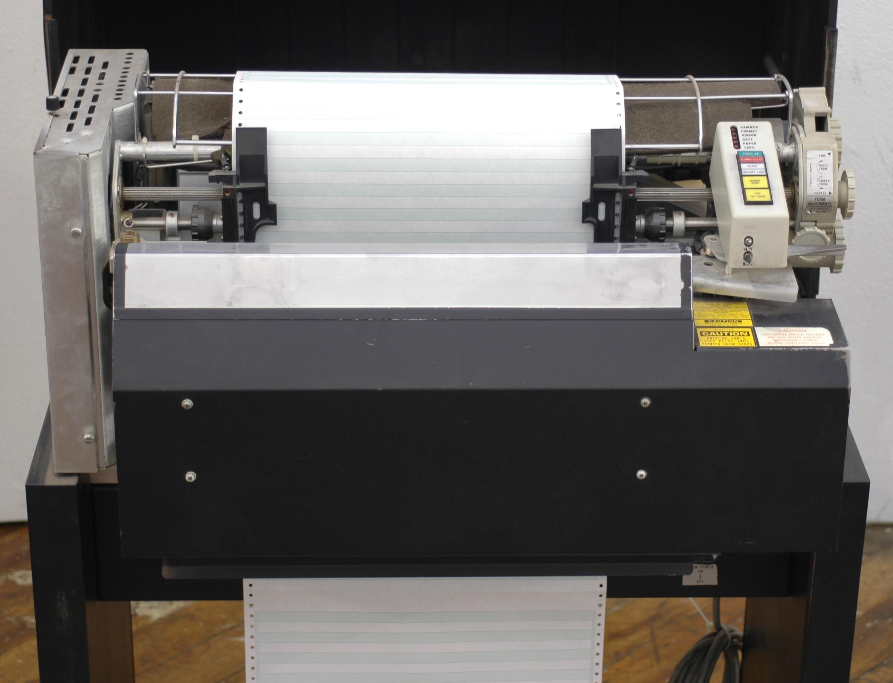

STUDY HUB
studyhub.in
STUDY HUB
studyhub.in
IMPACT PRINTERs
 

- Impact printers are those which strike on paper through inked ribbon to produce output on it.
- Normally all impact printers use a hammer against an inked ribbon such that ink from ribbon is transferred to the paper in the same
shape in which hammer strikes on it.
- Some common impact printer are Dot Matrix Printer , Chain Printer , Drum Printer etc.
:: Advantage of Impact PrinterS
:: Disadvantage of Impact PrinterS
NOTE :- {for more detail about any printer like history, working principle, construction etc. just click on its name }
Impact printer further categories in two types
- Character Printer
These are slow speed printers which prints one character at a time.There are two categories of such printers. - Dot Matrix Printer
- Daisy Wheel Printer
Dot Matrix Printer
Such printer do not have a set of characters embossed on otherwise available in view. They form characters by building them by dots.
Each dot being produced by firing a wire pushing through a solenoid at the inked ribbon, paper and plotter.
These printers can print upto 600 Characters per second(CPS).
Daisy Wheel Printer These printers produce characters like those written by type writters usually by a type bar or golf ball which is thrown against
the ribbon, paper and platten.
The characters are embossed on a radiating spokes of a daisy wheel which travel the complete width of the paper rotating until
The character selected is in position and then struck by a hammer.
Daisy wheel printers give better quality(it is also called quality printer) print and more expensive than dot matrix printers.
These printers produce characters like those written by type writters usually by a type bar or golf ball which is thrown against
the ribbon, paper and platten.
The characters are embossed on a radiating spokes of a daisy wheel which travel the complete width of the paper rotating until
The character selected is in position and then struck by a hammer.
Daisy wheel printers give better quality(it is also called quality printer) print and more expensive than dot matrix printers.
- Line Printers
As the name implies such printers produce output from computers line at a time. Two types of line printers are - Drum/Barrel printer
- Chain printer
Drum/Barrel Pinter
It has a drum around which are a complete set of characters. There are an equal number of small hammers, one per character and an inked
ribbon lies between the characters and printing paper. Each character in turn is printed by rotation of the drum and similar characters in
a lines are all printed simultaneously(at a time). The complete line is printed in one complete rotation of the drum.
Chain Printer
As the same goes the character set on a chain printer is mounted on a chain which revoles at a high speed presenting each character
in turn all along the length of the print line.
Print hammer hits at appropriate print points as the latter flies past.
These printers have a speed from 132 to well over 3000 lines per minute with a maximum line size of 132 characters.
Back
Homepage